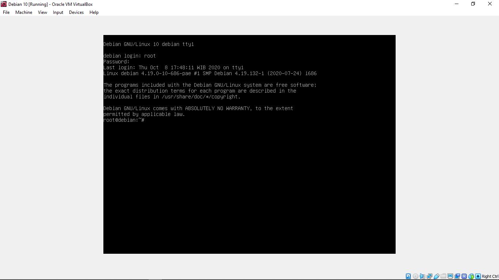
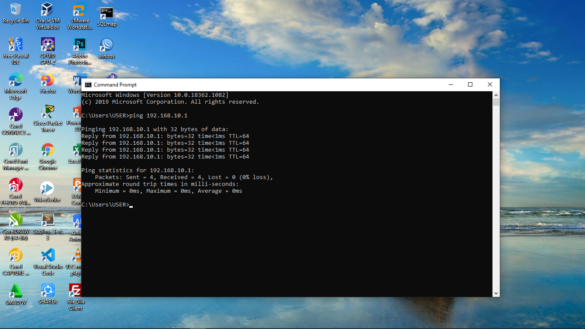
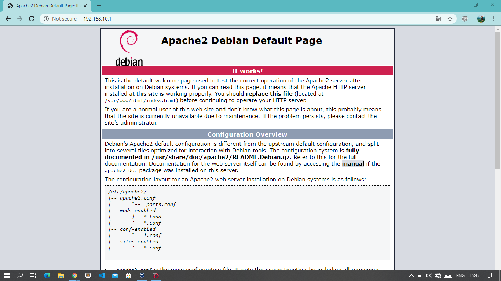

Apa Itu Web Server?
Web server adalah program yang menggunakan protokol HTTP untuk melayani file kepada client melalui halaman web. Beberapa web server terkemuka diantaranya ada apache, IIS, NGINX dan masih banyak lagi.
Web server sering kali digunakan sebagai dari paket program terkait internet dan intranet yang lebih besar untuk melayani email, mengunduh permintaan untuk File Transfer Protocol (FTP) dan membangun halaman web. Pertimbangan dalam memilih web server mencakup seberapa baik kerjanya dengan sistem operasi dan server lain, kemampuannya menangani pemrograman sisi server, karakteristik keamanan, mesin pencari, dan alat pembangun situs yang meyertainya.
Dan pada artikel ini kita akan membahas tentang bagaimana cara membuat web server apache di sistem operasi debian.
Langkah-Langkah Instalasi dan Konfigurasi DHCP Pada Debian Server
1.) Login ke debian dengan menggunakan user root
2.) Kemudian konfigurasi IP address terlebih dahulu pada server debian dengan mengetikkan perintah nano /etc/network/interfaces
3.) Kemudian tulis konfigurasi seperti di bawah ini
4.) Kemudian jangan lupa untuk merestart konfigurasi IP address dengan mengetikkan perintah /etc/init.d/networking restart.
5.) Kemudian cek IP address dengan mengetikkan perintah ip a . dan jika berhasil maka tampilannya akan seperti gambar di bawah ini.
6.) Kemudian install package apache2. Sebelumnya pastikan terlebih dahulu repository sudah mengarah ke DVD binary 1.
7.) Jika sudah selesai, kita beralih ke komputer client. Setting ip address nya terlbih dahulu.
8.) Kemudian coba PING dari client ke server jika berhasil maka tampilannya akan seperti gambar di bawah ini.
9.) Selanjutnya buka web browser, kemudian ketikkan alamat IP address server, jika tampilannya seperti gambar dibawah ini itu artinya proses instalasi web server telah berhasil.
10.) Selanjutnya kita coba untuk mengubah tampilannya dengan mengedit file index.html, kita beralih ke komputer server lagi.

13.) Kemudian jangan lupa untuk me restart setiap kali selesai konfigurasi dengan mengetikkan perintah /etc/init.d/apache2 restart.

14.) Kita cek lagi di komputer client kemudian masuk ke web browser. Dan bisa kita lihat bahwa tampilan web nya sudah berubah sesuai yang kita buat tadi.